殭屍防線 · 駐守物動畫總覽
駐守物改成一層一整排的縱深防禦（最多 4 層）
這一頁累積了駐守物的三輪改動，最新的在最上面：①縱深多層（一層一整排、最多 4 層）②四種砲台彈藥視覺加強 ③駐守衛兵／突擊兵美術重做。全部都已經 commit，都還沒出 TestFlight，等你要出的東西一起處理。最後面是①～⑥六種駐守物的完整動畫總覽與數值對照表。
下面的開火／陣亡動畫是直接把遊戲用的原始序列幀組成 GIF，背景是透明棋盤格（不是遊戲畫面截圖）——這樣看單一素材本身乾不乾淨、有沒有破圖比較準，但不包含遊戲裡的車道背景、光影、其他單位同時在場的樣子。開火動畫的播放速度照各自在遊戲裡的實際開火間隔換算；陣亡動畫 6 種都是 0.75 秒。部分瀏覽器對很快的 GIF（例如① 機砲塔 0.18 秒一輪）不一定能精準跑到那個速度，但看得出動作本身在做什麼。
1機砲塔 minigun · 🔫 · 射程 260 · 開火間隔 0.18 秒


2迫擊砲塔 mortar · 💣 · 射程 320 · 開火間隔 1.4 秒


3狙擊塔 sniper · 🔭 · 射程 420 · 開火間隔 1.8 秒


4雷射塔 laser · 🔴 · 射程 300 · 開火間隔 0.3 秒


5駐守衛兵 guard · 🛡️ · 射程 60（近戰）· 開火間隔 0.6 秒
輔助前鋒——貼身擋在防線前面，不是遠程砲台。
你的回饋是對的，問題不是錯覺。角色本身其實是個士兵沒錯（動畫播到一半可以看到頭盔、肩膀、雙腿），但「待機」畫面用的是動畫第 0 幀——玩家沒在攻擊的時候幾乎全程看到的就是這一幀，而這一幀剛好是士兵把大盾牌整片朝向鏡頭舉起、把整個人完全擋住的姿勢。結果就是玩家實際看到的只有一塊會發光的鐵板，看不到任何人形輪廓——這就是「不像士兵」的根本原因。
新版把盾牌角度轉斜，讓頭盔／臉部／肩膀／雙腿在待機姿勢下就清楚露出來，攻擊與陣亡動畫也一併重做成同一套設計，確保三個狀態look起來是同一個角色。
舊版現況（就是你截圖看到的樣子）


新版素材本身（透明底對照）
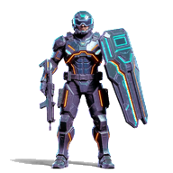
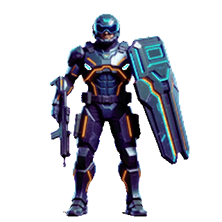
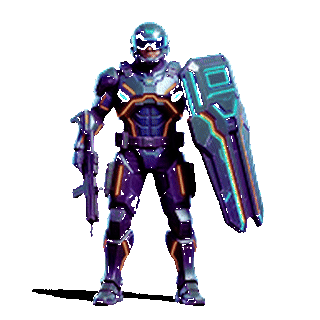
已套用實機場景截圖——白天光照、跟殭屍實際大小比例
6突擊兵 charger · 🏃 · 射程 140（近戰）· 開火間隔 1.1 秒
輔助前鋒——貼身擋在防線前面，不是遠程砲台。
這個比駐守衛兵更嚴重：不是姿勢問題，是角色設計本身就不像士兵。整套動畫（不只待機幀）畫的都是一台機器人／機甲——圓形機械頭、單一發光眼睛、沒有任何看得出來是人臉的部位，跟遊戲裡「突擊兵」這個身分完全對不上。待機幀又是貼臉特寫軀甲的裁切構圖，連頭跟四肢都看不到，比機器人本體還更難辨識。
新版整個重畫：戰術頭盔配透明護目鏡（護目鏡下看得到人類下巴輪廓）、雙手戰斧、正常人形比例站姿，明確是穿裝甲的人類士兵，不是機甲。
舊版現況（就是你截圖看到的樣子）


新版素材本身（透明底對照）
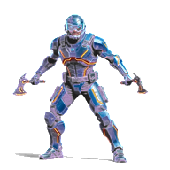
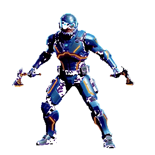
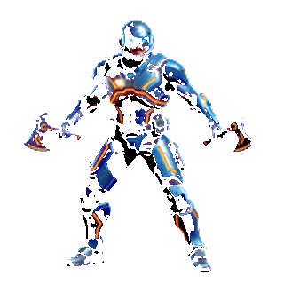
已套用實機場景截圖——白天光照、跟殭屍實際大小比例
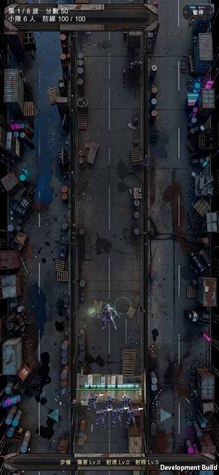
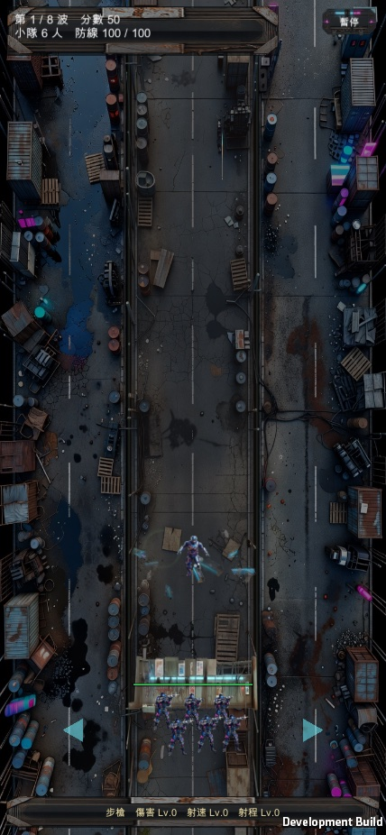
快速對照表
| # | 名稱 | 類別 | 圖示 | HP | 傷害 | 射程 | 開火間隔 |
|---|---|---|---|---|---|---|---|
| 1 | 機砲塔 | 砲台 | 🔫 | 90 | 10 | 260 | 0.18s |
| 2 | 迫擊砲塔 | 砲台 | 💣 | 110 | 55 | 320 | 1.4s |
| 3 | 狙擊塔 | 砲台 | 🔭 | 70 | 90 | 420 | 1.8s |
| 4 | 雷射塔 | 砲台 | 🔴 | 100 | 18 | 300 | 0.3s |
| 5 | 駐守衛兵 | 輔助前鋒 | 🛡️ | 220 | 14 | 60 | 0.6s |
| 6 | 突擊兵 | 輔助前鋒 | 🏃 | 130 | 45 | 140 | 1.1s |
最新：駐守物改成「一層一整排」的縱深防禦
你要的是「炮台跟突擊兵、駐守衛兵呈現成一整排，而且可以同時擁有多個，一層一層排列堵住車道」——四項規格照你拍板的決定做完了：最多 4 層、後排可以隔著前排打到更遠、每層有血條、沒到上限前掉落權重維持原樣。
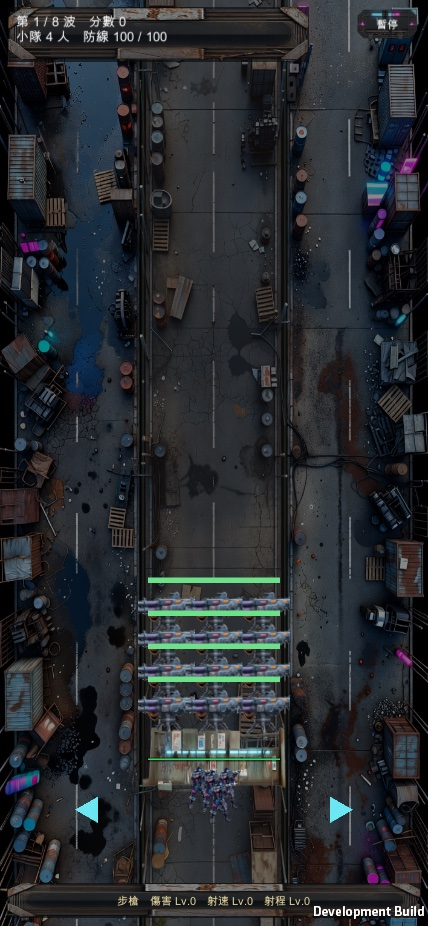
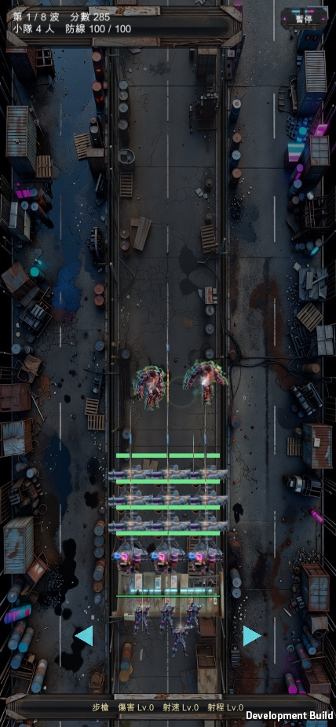
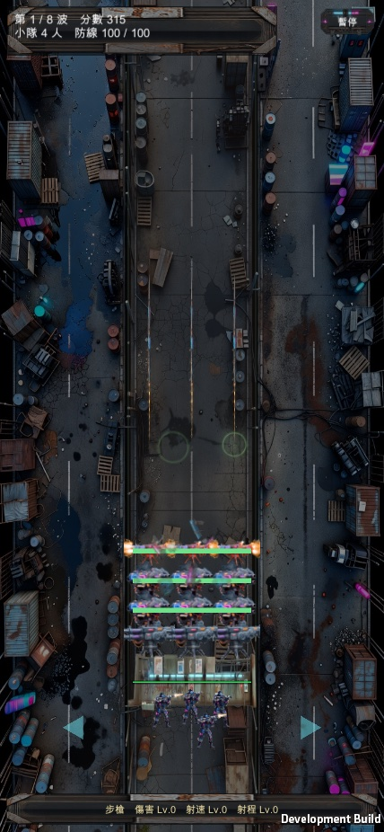
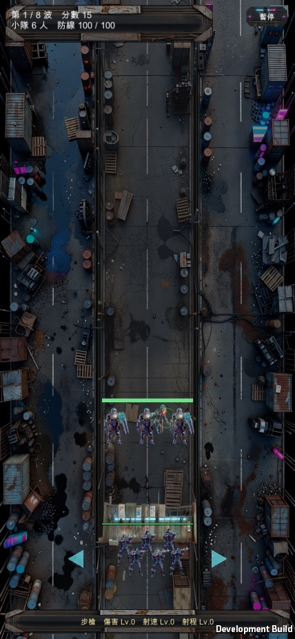
平衡：一排不等於三倍強
這裡有個很容易做錯的地方，我特別處理了：「一層畫成一整排」純粹是畫面，不是把一個單位變成三個。一層的 HP／傷害／開火間隔完全照原本的單一份數值走；開火時三台都會射，但每一發只帶原本傷害的三分之一，三發都命中同一隻時加起來剛好等於改版前的一發（跟火焰噴射器把傷害預算平分給三顆粒子同一個作法）。所以視覺上變成一道牆，但單層的火力跟改版前一模一樣——真正的強度變化來自「可以疊 4 層」這件事本身，那是你要的功能，不是偷偷灌水。
掉落經濟也沒有重新設計：權重表一個數字都沒改，只把原本「已經有駐守物就不再掉同類」的條件換成「疊滿 4 層才不再掉」。
怎麼驗的
走真實路徑（真的撿取、真的開火、真的被打爆），不是改旗標：撿 5 次確認層數走 1→2→3→4→4（第 5 次變補血、不會長出第 5 層）；逐層打爆確認剩 3→2→1→0 層而且座標有往前遞補；guard／charger 另外跑一輪確認也是成排。
「後排有沒有真的開火」這一項第一版驗錯了，值得記一下。第一版只看「所有層加總開火幾次」，量到 6 次——但那個數字在「只有前排在打」的情況下也會往上跑，根本分不出來，而且我放的測試目標幾秒就被打死、之後全體停火，等於在量牠活多久。改成逐層各自計數並持續補充目標之後才是有效的驗證：6 秒內 L0=33 L1=33 L2=33 L3=32，沒開過火的層數 = 0，這才真的證明後排隔著前排打得到。
前一輪：①②③④四種砲台的彈藥視覺加強
你提的需求是「攻擊要有可見粒子，傷害要基於粒子碰撞」——盤點後發現這條其實已經做了：四種砲台早就在生成真正會飛的彈藥物件、走跟玩家武器同一套碰撞判定，也各自有專屬美術，不是共用色塊或瞬間扣血。你會覺得沒做到，八成是因為飛太快、彈體太小，肉眼幾乎抓不到（機砲 1400px/s、狙擊 2000px/s，飛行時間常常不到 0.15 秒）——這次做的是「補存在感」，不是從零生出粒子系統。
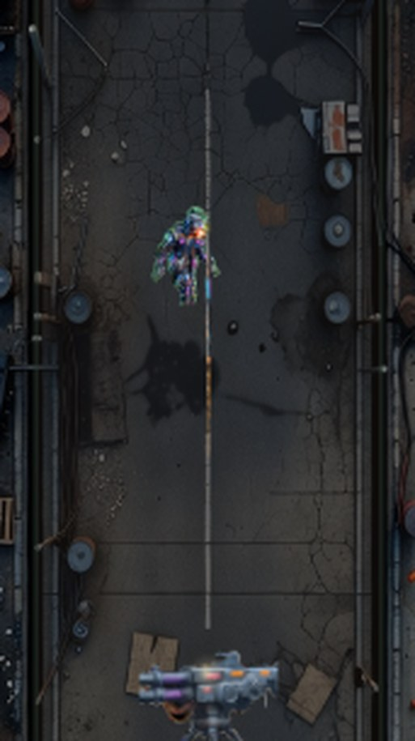
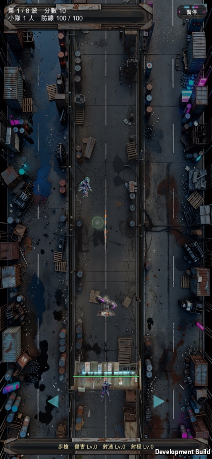
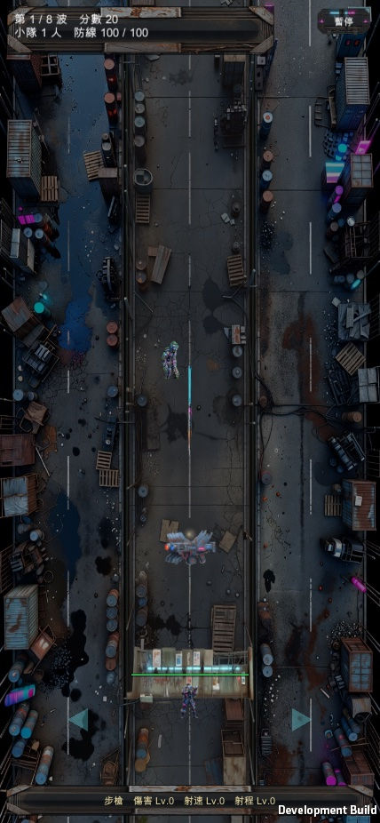
機砲塔那張為什麼要放大裁切：曳光彈在整頁縮圖尺度下不容易一眼看到，實際遊戲畫面（跟上面同一張截圖原始尺寸）裡從砲台到殭屍之間有一條淡淡的曳光線，放大裁切之後那條線才看得清楚——這也代表這次的加強幅度是「肉眼可見但不誇張」，不是把整個場面弄成特效轟炸。
有沒有動到平衡：沒有，全部是視覺疊加
| 改了什麼 | 會不會動到傷害/難度 | 為什麼 |
|---|---|---|
| 彈體放大（4 種都放大了 50%~70%） | 不會 | 碰撞判定量的是殭屍的體型，不是彈藥的視覺縮放（見 ResolveProjectiles 的 half 變數）——彈藥畫多大純粹是畫面，命中範圍沒變 |
| 機砲／狙擊的曳光拉伸 | 不會 | 只改 Sprite 的 Transform Scale，不影響位置或速度數值 |
| 曳光殘影／煙霧殘影粒子 | 不會 | 純視覺特效物件，跟彈藥本體是兩個東西，不參與碰撞 |
| 狙擊開火瞬間的閃光拉線 | 不會 | 只是畫一條線特效，跟原本命中判定完全無關 |
| 飛行速度／傷害／射程／開火間隔 | —— | 完全沒有動這四個數值，見下方說明 |
速度沒有降。你原本說「必要的話」可以降速換取更明顯的軌跡——評估後判斷不需要：放大＋拉伸＋殘影這三個純視覺手段疊起來，已經足以讓四種彈藥都清楚看得出「有東西在飛」（見上面四張截圖），不需要犧牲飛行速度。降速的風險是彈藥飛行時間變長，跟開火間隔（機砲 0.18 秒最短）拉近，可能讓兩發彈藥同時在飛、畫面變擁擠，而且會實質改變「攻擊到命中」的延遲手感——這是真的會動到平衡與手感的改動，這次刻意避開了。如果你看過實機截圖覺得速度感還是太快、想要更慢更誇張的軌跡，再跟我說，那會是另一個要單獨評估的改動。
怎麼驗的
Unity batch mode 出 Mac 版 build，0 個編譯錯誤。用既有的驗證框架（VR_ONLY=zlturret，先前盤點現況那次加的）逐一召喚 4 種砲台、手動補一隻站在射程內的殭屍觸發攻擊，等到「場上真的有這個武器的彈藥在飛」才截圖，不是固定等幾秒碰運氣。另外用完整的八武器回歸測試（VR_ONLY=zlweapons）跑過一輪，確認玩家自己的武器（包含同名的「狙擊槍」，程式裡的字串是 "sniper" 不是 "blk_sniper"）沒有被這次改動波及——開火次數、擊殺數、總傷害都在正常範圍內，沒有例外或崩潰。
怎麼做的：診斷 → 參考稿 → 動作影片 → 去背抽幀
照 tools/ai_pipeline 既有流程：先生一張兩格並排的參考稿確認新造型方向（Grok 圖 ×1，不去背），OK 之後用這張參考稿做 image-to-video 錨定風格，各生一支「攻擊」跟「陣亡」的動作影片（Grok 影片 ×4，4 秒 720p，純綠幕背景），再用 video-sprite-extract 去背抽幀成遊戲用的透明 PNG 序列。過程中踩到一個坑：影片開頭第 0 幀殘留參考圖本身的黑色背景（大約 0.2 秒），去背工具的自動取樣一抓到那幀就整批算錯背景色，把角色本體也一起挖空——修法是先裁掉那一小段黑底再丟去背，兩支「陣亡」動畫另外手動指定顏色門檻（自動算出來的偏高，會把深色盔甲當背景吃掉）。
花了多少
| 項目 | 內容 | 金額 |
|---|---|---|
| 參考稿 | Grok 圖 ×1（兩角色併一張，不去背） | $0.20 |
| 駐守衛兵動作影片 | Grok 影片 ×2（攻擊＋陣亡，各 4s 720p） | $0.64 |
| 突擊兵動作影片 | Grok 影片 ×2（攻擊＋陣亡，各 4s 720p） | $0.64 |
| 小計 | 去背抽幀是本地運算，不額外收費 | $1.48 |
每一筆都記在 tools/ai_pipeline/SPEND.md。第一版就一次過，沒有作廢重生的嘗試。
已套用，你確認之後就正式換掉了。⑤⑥兩節「已套用」那排是實機場景截圖，跟①②③④砲台維持原樣（沒有問題，沒有動）。改動已經 commit 進版控（2b182f3），還沒出下一版 TestFlight——等你這邊要出的東西一起處理。
需要你決定的
| 要決定的 | 為什麼輪不到我決定 |
|---|---|
| 舊版素材檔案要不要清掉 | 舊的 44 張序列幀已經被新檔案「同名覆蓋」，git 歷史裡還留著（8ab13e7 之前的版本），不佔用目前工作目錄空間，所以沒有主動處理——如果你想連 git 歷史一併清乾淨，那是比較少見的需求，跟我說一聲再做。 |
還沒到位的
新版的「陣亡」動畫幀數不是均勻抽樣。因為去背抽幀時關掉了運鏡穩定（角色倒地過程本身尺寸變化很大，穩定演算法會誤判成鏡頭在動，硬用的話只會抽到最開始站著的幾幀），改成整支影片平均分佈抽幀，動作看起來比舊版稍微跳一點，不是逐幀等間隔的絲滑程度——如果你實機玩起來覺得不夠順，可以再抽多一點幀或换更長的來源影片。
沒有涵蓋玩家小隊自己的槍手動畫。那是另一組素材（8 種武器各自的造型與開火動作），這頁只整理「駐守物」6 種——如果你也想連小隊槍手一起看過一輪，跟我說一聲另外整理。